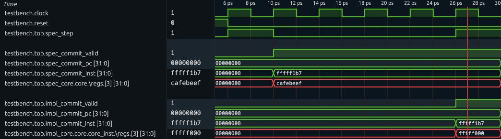

CPU Verification Lab
Due Date: Apr 30, 2026; Last Updated Date: Feb 11, 2026
Table of Contents
- Overview: Formally Verify the PSP
- Setup Environment
- Part 1: Get Familiar with the Starter Code (30%)
- Part 2: Find the Adder Bug (10%)
- Part 3: Find the Backdoor Instruction (60%)
- Submission Guideline
Lab Details
Collaboration Policy
Our full Academic Honesty policy can be found on the Course Information page of our website. As a reminder, all 6.5950/6.5951 labs should be completed individually. You may discuss the lab at a high level with a classmate, but you may not work on code together or share any of your code.
Grading
Tasks in green boxes are graded, while tasks in purple boxes are for guidance.
Overview: Formally Verify the PSP
In the CPU Fuzzing Lab, you experimented with the buggy Pretty Secure Processor and found an ALU bug and a backdoor instruction. In this lab, you will try to find them again with another approach, model checking, as you have learned from the Formal Verification Recitation. After completing this lab, we hope you will have a better understanding of formal verification and compare the costs and benefits of fuzzing against formal verification.
Finish the Recitation First!
If you have not finished the Formal Verification Recitation, stop working on this lab and read through the recitation first! The recitation presents a simpler version of the lab and gets you familiar with the whole verification framework. A solution to the recitation has been provided on Piazza.
Your Verification Task
As explained in the “The Big Picture” Section of the Recitation, the basic idea of formal verification is to check the implementation matches the specification under all possible inputs to the hardware. In this lab, the 3 key components of this task are:
- Implementation: Verilog source code of the PSP Processor.
- Specification: (A small portion of) RISC-V ISA definition.
- Covering all possible inputs: Use a formal verification framework consisted of Yosys and rIC3.
Code Structure
You will gradually write the code to achieve this verification task. Here is an overview of the starter code structure. You DO NOT need to study internals of rIC3/, scripts/, and build/.
|-- toy/ # A toy example used in the recitation to help you understand the formal verification workflow
|
|-- cpu/ # The true task of this lab: CPU verification
| |-- mem.sv # iMem and dMem
| |-- core_to_verify/ # SystemVerilog code of PSP, the implementation core
| | `-- core_to_verify.sv # Top module for the implementation core
| |-- impl.sv # Implementation core equipped with dMem
| |-- spec/ # SystemVerilog code of the RISC-V specification core
| `-- spec.sv # Specification core equipped with dMem
|
|-- entry/ # Entry points (top modules) of simulation and verification
|
|-- simulation/ # RISC-V assembly code used in simulations
|
|-- Makefile # Useful Make commands you would need to invoke in the lab
|
|-- rIC3/ # The powerful rIC3 model checker, including bounded and unbounded model checker
|-- scripts/ # Helper scripts which you DO NOT need to understand or directly invoke
`-- build/ # Runtime directory where you can find important results or intermediate products
Setup Environment
To finish this lab, we recommend one of the two environments:
- Use a docker container on your own local machine (recommended).
- To use docker, simply run the script
build_and_run_docker.sh. It creates a container and attach a bash terminal to it. The entire lab directory is mounted to/workspacein the container. Any changes made in/workspaceare reflected in the lab directory on the host, and vice versa. You can modify files using your favorite IDE on the host machine, and run commands in the container terminal.
- To use docker, simply run the script
- Use
dobby.csail.mit.edu, where most of the toolchains are already installed for you.- Install the nightly version of Rust toolchain for your user. Follow the installation guide and choose nightly during configuration, or simply run
curl --proto '=https' --tlsv1.2 -sSf https://sh.rustup.rs | sh -s -- -y --default-toolchain nightly. A re-login might be required to initialize the updated PATH variable. - Install
typerpackage in your python environment.
- Install the nightly version of Rust toolchain for your user. Follow the installation guide and choose nightly during configuration, or simply run
Alternatively, you can manually set up the environment (not recommended). This is the checklist:
- Init submodules by running
git submodule update --init --recursive.- Ensure yosys, iverilog and verilator are installed. If you are using Ubuntu, you may need to build yosys from source to get a recent version.
- Ensure the nightly version of Rust toolchain is installed.
Build rIC3
In your preferred environment, switch to the lab directory and run make ric3. This initializes and builds the model checker that we will use through out the lab.
Waveform Viewer
You need to install your favorite waveform viewer on your local machine. We recommend GTKWave or Surfer.
Just a reminder that waveform viewer cannot be opened inside the docker container or on the lab server because it needs a GUI. You need to download the waveform to your machine and view it locally.
Troubleshooting
In case any make command fails in the lab (e.g., cannot find files of verilator), try running make clean to clear the build/ directory and try again!
Online RISC-V Decoder
This lab involves translating between RISC-V instructions and their 32-bit machine code representations, in both directions. Manually decoding a 32-bit instruction can be time-consuming and error-prone. You may use this RISC-V Instruction Encoder/Decoder to make your life easier.
Part 1: Get Familiar with the Starter Code (30%)
The processor you will verify this time will be more complex than the one in the recitation. It could be hard to directly jump into the implementation part of the processor. So, let’s start by looking at the specification. The specification represents the correct state-machine transition behavior of a CPU, that is, how the architectural state is correctly updated by each instruction. It does not need to reflect how long (i.e. how many cycles) an instruction should take in a real (pipelined / Out-of-Order) processor and we can just write a specification that executes 1 instruction per cycle for convenience.
Part 1A: Specification Code (15%)
We will look at four files related to the specification core:
cpu/mem.sv: The instruction memory (iMem) and data memory (dMem).cpu/spec/spec_core.sv: The specification core.cpu/spec.sv: The specification core + dMem.entry/spec.sv: The specification core + dMem + iMem. This is the entry point to simulate the core on a concrete RISC-V program.
To better understand how this simple core works, let’s run the core with a concrete program!
Run a Test Program
Exercise
simulation/testcase.scontains a test RISC-V program. Runmake sim ENTRY=spec ASM=testcase.s CYCLES=5to run the specification core using the program. Check the terminal output and the detailed VCD waveform atbuild/sim-spec.vcd.
The code you just ran initializes an instance specification core and simulates it by 5 cycles (controlled by the CYCLES variable). The program binary is passed into the top module through the imem_init_data input. The states of the specification are printed out at each cycle. You will be asked to explain this output along with the three source files (see above) in the following discussion question.
Guiding Questions
- How many instructions can iMem hold? Which port of iMem is used by the specification core? How do the two read ports behave differently?
- How many bytes can dMem hold? Does it require word (4-byte) alignment for the address?
- Moving on to the core itself. How many cycles (number of posedge) does it take to execute one instruction?
- You can see registers
pc,regs,csr, and wirespc_next,regs_write_*, andcsr_next. What’s the relationship between a register and its corresponding_nextwire?- In
entry/spec.sv, how is thestepsignal driven? What happens to the core ifstepis set to low in a cycle?Click to reveal the answer
- Maximally 16 instructions (with the default setting). The specification core uses port 1 of iMem. Port 1 is combinational, while port 2 is sequential.
- Maximally 16 bytes. Internally, dMem does not enforce address alignment. It simply operates on
data[addr+3:addr].- It takes one cycle to execute one instruction.
xxx_nextis the value ofxxxin the next cycle.- If not reset,
stepis set to high. Ifstepis low, the specification core freezes and does not advance.
1-1 Discussion Question
The starter code in
cpu/spec/spec_core.svincludes a basic structure to execute different instructions. For example, if you search forif (is_lui) begin, you will find a branch handling LUI instructions. An unrecognized or unhandled instruction will fall into theelsebranch, which does nothing for now (theassume (0)statement has no effect on the simulation).In simulation, the program binary is loaded at the beginning of iMem, while the remaining words are initialized to zero. For this starter code, when the core reads and executes a zero word, what’s its behavior? Where will the
pcbe in the next cycle?
Now you should have a general idea about how a specification core execute one instruction.
Support 4 More Instructions
Now that you have been familiar with the starter code of the specification, let’s extend it a little bit to test your understanding.
1-2 Exercise
Following the pattern of how LUI instruction is implemented in the specification core, extend it to support ADDI, SRLI, ADD, and BEQ instructions. Some helper signals for decoding is already available at the top of
cpu/spec/spec_core.sv.You can test your code by updating the
testcase.sto include these new instructions. You can also create a new assembly code undersimulation/and specify it in the simulation command by setting theASM=variable.Below are some helpful tips:
ISA Definition
Please refer to the RISC-V ISA Specification, starting at Page 18, for the detailed explanation of each instruction. A summary of these instructions is on Page 130.
Implementing the specification core
Although the LUI instruction has provided a great example, we would like to explicitly introduce how an instruction should interact with the states.
Mandatory for every instruction/routine:
- By setting
commit, we specify whether the core commits in this cycle or not.- By setting
pc_next, we specify the address of instruction to be executed in the next cycle.Reading from a register is combinational. You can simply use
regs[x], wherexis the register address. Writing to a register is sequential. You must setregs_write_ento high, setregs_write_addrto the register address, and setregs_write_datato the written data.Similarly, reading from dMem is combinational. You must set
dmem_read_ento high, setdmem_addrto the address, and then the data is available atdmem_data_o. Writing to dMem is sequential. You must setdmem_write_ento high, setdmem_addrto the address, and setdmem_write_ento the written data.Reading from CSR or getting current privilege are combinational, simply using
csr.xxxandprivilege. Updating them is sequential. You should updatecsr_nextorprivilege_nextaccordingly.About the
assume…If you are confused by what
assume (0)is in theelsecase when executing an instruction, don’t worry. It does nothing to the simulation and you don’t need to change it. We will talk about it later in Part 1C.
Part 1B: Implementation Code (5%)
Similar to the specification core, we have the implementation core, Pretty Secure Processor. Here are the relevant files:
cpu/mem.sv: The instruction memory (iMem) and data memory (dMem).cpu/core_to_verfy/core_to_verify.sv: The complicated implementation core.cpu/impl.sv: The implementation core + dMem.entry/impl.sv: The implementation core + dMem + iMem. This is the entry point to simulate the core on a concrete RISC-V program.
Let’s also run the implementation core using the test program!
Exercise
Run
make sim ENTRY=impl ASM=testcase.s CYCLES=5to run the implementation core using the assembly program for five cycles. Check the terminal output and the detailed VCD waveform atbuild/sim-impl.vcd.You may see no commit message is printed. Please increase the cycles until you see the second instruction is committed.
Guiding Questions
- Which iMem read port is used by the implementation core?
- dMem provides two ports to return the read data:
data_oanddata_o_seq. What’s their difference? Which one is used by the specification/implementation core?Click to reveal the answer
- Port 2, the sequential one.
- In dMem,
data_ois combinational, whiledata_o_seqis sequential. The specification core usesdata_o, while the implementation core usesdata_o_seq.
1-3 Discussion Question
Answer this question after finishing the above exercise:
Attach a screenshot of the VCD waveform here and answer: After simulating how many cycles (since reset) did you observe the first and the second instructions being committed? What is the reason for these two cycle numbers based on the micro-architecture of the pretty secure processor?
Part 1C: Verification Code (10%)
Good! Now we have acquired basic understanding about the simple specification core and the complicated implementation core. Let’s move on to the verification by putting them together.
Recall the toy example from the recitation where we compare Alice’s answer and Bob’s answer. There are two key steps to set up the verification, which we will implement in entry/miter.sv:
- Synchronization: The specification core and the implementation core have different pace.
- Comparison: Determine and extract committing architectural states that we want to compare between the two cores.
Synchronization
When we simulate the specification core, we set step to always high (except for reset cycle) in entry/spec.sv. This allows the core to process new instruction every cycle. However, we cannot apply this simple setting in the verification setup.
In CPU verification, we assert the equality between architectural states of the specification core and the implementation core when they are both committing. To compare the committing state, we want whoever commits an instruction faster to freeze and wait for the other one to commit. Due to the pipeline design, the implementation core is usually slower than the specification core. Therefore, we will use step signal to freeze the specification core until the implementation core has committed too.
Note that the specification core, though being a single-cycle processor, may fail to commit even when step is high. This is because of the exception handling, which we will implement later in Part 3A. To accommodate this behavior, we allow the specification core to take multiple cycles to commit an instruction. The overal control logic is as follows:
- Step until it successfully commits an instruction, regardless of the implementation core’s commit state.
- Freeze until the implementation core also reaches commit state.
- Now, both cores are in commit state. In the next cycle, we return to bullet point 1 to process the next instruction.
Here is an example to illustrate how the step should work:
| Cycle | SPEC commit (end of previous) | IMPL commit (end of previous) | SPEC step (this cycle) | Explanation |
|---|---|---|---|---|
| 1 | 0 | 0 | 1 | Step, because SPEC has not committed |
| 2 | 1 | 0 | 0 | Freeze, because SPEC has committed but IMPL has not |
| 3 | 1 | 1 | 1 | Step, because both cores have committed |
The step signal is combinational and determines whether the specification core advances in the current cycle. It is derived from the commit states of the two cores, which are sequential signals reflecting whether each core committed at the end of the previous cycle.
You may already noticed a problem: What if the implementation commits faster? Imagine a case where the two cores are synchronized at first. Then, an invalid instruction comes. During this cycle, the specification core raises an exception without commiting this instruction. However, the implementation core does finish a commit – It either commits the invalid instruction due to a bug, or directly commits the next exception handling instruction due to a correct optimization. The latter case is unlikely, but theorectially possible. In either case, the two cores are now out of sync.
One potential (and ideal) solution is to freeze the implementation when the specification fails to commit, but requiring modifying the implementation code. We take an alternative approach: In entry/miter.sv, we have spec_commit_cnt and impl_commit_cnt, which records how many instructions the two cores have committed respectively. When the two cores are both committing, we assert that the two counters are equal, meaning the implementation does not commit extra instructions. A violation of this assertion is not necessarily a bug, as mentioned above, but worth user investigation.
1-4 Exercise
In
entry/miter.sv, find and implement thespec_stepsignal, which controls whether the specification core should step in the current cycle. It should step if at the end of the last cycle, the implementation core has committed, or the specification core has not committed. The commit state indicators arespec_commit_validandimpl_commit_valid, which record whether a core is in commit state at the end of the last cycle.
Comparison
At a cycle, if both cores are committing, we compare their architectural states. Usually, the more states being compared, the more sensitive our verification will be.
Here are all states we would like to compare in our task:
| State | Explanation |
|---|---|
| commit_pc | Program counter, the address of the commiting instruction |
| commit_inst | Current commiting RISC-V instruction |
| registers | Snapshot of the register file at the commit cycle |
| csr_mtvec | Control and status register mtvec |
| csr_mepc | Control and status register mepc |
| csr_mpp | Control and status register mpp |
| privilege | Privilege level |
1-5 Exercise
In
entry/miter.sv, follow the examples ofcommit_pc, export states from the two cores, and compare them in the assertion. Remember to expose the helper wires as outputs of the top module, so that they can be preserved in the waveform when debugging.
Limitation on Assertion
Due to the framework’s limitation, up to one assertion statement is supported. However, we can still achieve complex assertions by using boolean expressions. In this exercise, make sure you write the comparison inside the provided
assertstatement.
Test on Finding a Counterexample
To check whether your verification logic is implemented correctly, we suggest the following commonly used approach in verification research:
- Simulate your verification code on simple programs where correctness is guaranteed.
- Manually insert a bug and verify that your checker detects it.
However, if you are confident in your understanding of model checking and the miter implementation, feel free to skip this self-testing and proceed to Part 2.
Self Testing
First, let’s simulate a simple program by running
make sim ENTRY=miter ASM=testcase.s CYCLES=10. The program should contain at least one LUI instruction. Then, check the command line output and the waveform atbuild/sim-miter.vcd. You should observe that the committing trace are exactly the same.Next, we manually create a bug. In
cpu/spec/spec_core.sv, find the logic that executesLUIinstruction. Let’s temporarily replaceimm_uwith32'hcafebeef. Then, run the miter simulation again (you can increase the simulation cycles as needed). Looking at the simulation trace and you should observe deviation after aLUIinstruction is committed.Finally, we remove the bug by recovering the correct
LUIimplementation.
Finding counterexample using model checking
Furthermore, we will try bounded model checking (BMC). BMC checks whether the miter can reach a mismatching state within a bounded number of cycles, equivalently considering all possible programs within that bound.
Before we proceed, let’s first understand some assumptions we have defined in the miter.
- Since we have only supported five instructions in the specification core, we want to explore programs containing only these instructions. Constraining instruction types is achieved by the assumption
assume (0)in theelsebranch in the specification core. - To simplify the problem and accelerate the model checking, we will constrain the active registers too. We have an assumption
assume (regs_write_addr < 4)in the specification core to constrain that, we will only consider programs where the first four registers are written to.
FYI: Assumptions and Assertions
You are already familiar with the assertions, right? Whenever you want to check the truthfulness of a property, you assert it. Assumptions, on the other hand, is used to constrain the search space. Here is a summary of how assumptions work: All expressions being assumed by
assumeare collected, in the same way the assertions are collected. When the model checker queries the SMT solver, instead of just asking the SMT solver to find a counterexample violating the assertions, it asks for a counterexample, i.e., a concrete instance of instruction memory, that satisfies all assumptions but still violates some assertions.
Time to launch BMC!
Exercise
To begin with, we manually create a bug. In
cpu/spec/spec_core.sv, find the logic that executesLUIinstruction. Let’s temporarily replaceimm_uwith32'hcafebeef.First, run
make aiger ENTRY=miterto prepare the AIG inputs for model checker. Then, runmake bmc BMC_K=5to launch a BMC check up to five cycles. You will seeresult: unknown, meaning that no counterexample has been found within five cycles. However, no conclusion about the miter can be drawn either, due to the bounded nature of the checking.Now, increase the number cycles (
BMC_K) until you can seeresult: unsafe, meaning a counterexample trace is found. Then, runmake cexto get the counterexample waveform atbuild/cex.vcd.Finally, we remove the bug by recovering the correct
LUIimplementation.
Reminder
Remember to run
make aiger ENTRY=mitercommand after you make changes to the SystemVerilog source code and before you launch BMC usingmake bmc!
Guiding Questions
Investigate the waveform by inspecting critical states (e.g., the value of deviating register) and find out:
- How long is the counterexample trace? (i.e., how many cycles is the counterexample)?
- What is the 32-bit instruction that leads to the counterexample?
- Did you happen to find bugs in your specification core about instructions other than the
LUI?Click to reveal the answer
The waveform should roughly look like this: at cycle 6 (the first cycle after reset is cycle 1), both cores are in committed state, but the committing instruction is an LUI which is buggy. If we inspect and compare the destination registers of the two cores, the implementation core’s register is correct; however, the specification core’s register has the value
cafebeef.
If your waveform looks different, please check Exercise 1-4 and 1-5 and make sure your logic matches what the handout describes.
Now, you are ready to go with real challenges!
Grading
All numbered discussion questions and exercises (i.e., green boxes) will be graded.
For coding exercises:
- In Part 1A (Exercise 1-2), we will do functionality tests for the instructions you just support (inside
cpu/spec/spec_core.sv). - In Part 1C (Exercises 1-4, 1-5), we will examine the correctness of your miter (
entry/miter.sv).
Part 2: Find the Adder Bug (10%)
It is rather simple to find the adder bug after we have built up the framework. In fact, we already have all the code required to find this bug. The only thing you need to do in this part is to ask the model checker to check for more cycles.
Exercise
Set the value of
BMC_Kto10and redo the BMC verification. You are now supposed to find the adder bug (result: unsafeis reported). Then, runmake cexand examine the counterexample tracebuild/cex.vcd.Tips to investigate the waveform
To begin with, you want to display
clockandresetsignals so that you can observe a clear timeline.You should first locate when the assertion is violated. Then at that cycle, examine the extracted signals which are being compared inside the
topmodule, and find out which state is deviating. To further determine the condition of the buggy behavior, dive into the cores by checking insidetop/spec_core/coreandtop/impl_core/core/core_instrespectively. There, you can find internal signals, such as\regs, which is the register file array.
2-1 Discussion Questions
Attach a screenshot of the waveform to show critical states and answer:
- What are the instructions being executed? What’s different in the compared architectural state?
- What are the (magic) values of the source operands when that buggy instruction is executed?
Grading
The discussion questions (i.e., the green box) will be graded.
Part 3: Find the Backdoor Instruction (60%)
Now, let’s find more hidden bugs in the Pretty Secure Processor (PSP)!
Recall in the CPU Fuzzing Lab, the backdoor instruction is an instruction with illegal encoding. Based on the specification, this illegal instruction should cause an exception. However, the implementation does something different – it is executed as a nop or even silently changes the privilege level. In this part, you will model the behavior of illegal instructions (i.e., causing exceptions) in the specification, and automatically find that a backdoor instruction mismatches this behavior using the verification miter.
Simplications on the Original PSP Processor
The original PSP processor supports dozens of instructions as well as many CSRs. It could be tedious for you to implement all of them in the specification. So we have simplified the Verilog code of the PSP processor and we list a summary of it:
-
Only support 10 instructions: LUI, BEQ, LW, SW, ADDI, SRLI, ADD, ECALL, CSRRW, and MRET. The encodings of these instructions have been provided in
cpu/spec/spec_core.sv. But you need to check the ISA Specifications for the expected behavior for each of them. -
Only support 3 CSRs: mtvec, mepc, and mpp. They are all zero after reset. Recall we have explained these CSRs here. Writing to any other CSRs will have no effect and reading from any other CSRs will return 0. Writing or reading to any other CSRs also will not check the privilege level or trigger exceptions. Note that mpp is a not a standard standalone RISC-V register, but is introduced in this lab for simplicity.
-
Only support 2 privilege levels: User Mode and Machine Mode. A 2-bit register stores the mode: 0 as User Mode and 3 as Machine Mode. The processor is in the Machine Mode after reset.
-
When loading from or storing to an address in dMem that is misaligned (i.e., lower 2 bits are not zero), treat it as if the address is aligned (i.e., pretend the lower 2 bits are zero). iMem aligns the incoming address automatically, so there is no need to align PC. Aligning PC in the specification core can even cause deviation on PC between the two cores, so don’t do that!
Part 3A: Add Exceptions in the Specification (10%)
The first step is to specify the behavior of exceptions in the specification. The expected behavior of exceptions can be complex when many CSRs are involved. Thankfully, we only need to support 3 CSRs. Instead of pointing you to the official document of exceptions, which contains many CSR names that might scare you, here is a short summary of the expected behavior of exceptions in our simplified processor:
- Store the current
pctomepcand jump to the location stored inmtvec. - Store the current (zero-extended-to-32-bit) privilege level to
mppand set the privilege level to Machine Mode. - The current instruction will not be committed.
In our specification core, the exception is exclusively for illegal instructions. An instruction may be illegal due to invalid instruction format or privilege violation. You will need to identify illegal instructions and defer their handling to this exception mechanism in Part 3B. For now, we focus on implementing the exception behavior itself.
3-1 Exercise
Look at the exception logic in
cpu/spec/spec_core.sv. First, comment out or delete theassume (0)statement. Then, implement the exception routine, so that illegal (or currently unsupported) instructions are handled.
Part 3B: Find the Backdoor Instruction (40%)
Only adding the exception is unlikely to be enough to find the backdoor instruction because our specification has not matched the implementation yet – it only supports 5 out of 10 instructions. But this might still be a good time to just go and try the verification, and to see what we can find. Try to run the verification with make aiger ENTRY=miter and make bmc BMC_K=10. What have you observed? You probably will see the same adder bug!
Disable the Adder Bug
It actually can be annoying during the formal verification that even if the design has many bugs, the formal verification framework might only be able to find one of them. In this BMC engine, the shortest counterexample is found and the verification stops after that. As long as ADD and ADDI are allowed, very short counterexamples exist that quickly terminate the verification. The checker does not explore deeper executions that could reveal other assertion violations.
One normal solution is just fixing the existing bugs – No one wants so many bugs lying in the code base. We don’t need you to dive into the implementation core to fix the adder bug. Instead, we provide a macro switch that disables the bug.
Exercise
Go to
cpu/core_to_verify/core/switch.sv. Find and comment out the definition ofMITSHD_LAB7_ENABLE_ALU_GLITCH.Then run
make aiger ENTRY=miterandmake bmc(with your preferred parameters) and you should see no counterexample found (with theBMC_Kthat gave you the adder bug).
Finally, find the Backdoor Instruction.
Now is the final time to find the backdoor instruction.
3-2 Exercise
In the specification, add the support of all legal instructions so that you can find the backdoor instruction. Run
make aiger ENTRY=miterandmake bmc(with your preferredBMC_Kparameter) to use the model checker to find the backdoor instruction.Below are some helpful tips:
ECALL does not commit
ECALL is a special instruction that does not commit even if executed successfully. In the implementation core, a valid ECALL is handled as an exception that flushes the pipeline and never makes it to the commit stage. Your specification core should mark it as not committed, so that the core can step further until successfully commiting an instruction. In fact, you may notice that the ECALL routine matches the exception routine written in Exercise 3-1.
Type cast to an enum type
The privilege level is defined as an enum type
Privilege. In SystemVerilog, an expressionexprcan be cast to the enum type using the syntaxPrivilege'(expr).Illegal Instructions
Remember to identify illegal instructions and let exception routine handle them! For example:
- ECALL at machine mode
- CSRRW accessing valid CSRs but not in machine mode
- MRET not in machine mode
MPP CSR
Privilege level is a 2-bit state, while the MPP CSR has 32 bits. Although the architectural state being compared only includes the lower 2 bits of MPP, the entire 32 bits can still propagate to a register through CSRRW instruction. Therefore, we want the two cores have the same behavior. Here’s what your specification and the given implementation should do:
- When storing current privilege into MPP, make sure the upper 30 bits are set to zero.
- When CSRRW loads MPP into a register, load the entire 32 bits of MPP.
Use simulation for testing
The simulation technique we used in Part 1 is still a great way to test your implementation of each instruction as well as the exception handling.
The initial privilege level in simulation is machine mode. If you want to start the simulation with different privilege level, simply specify
PRIV_INITin yourmake simcommand. For example,make sim ENTRY=spec CYCLES=10 PRIV_INIT=1. For reference,0,1,2, and3are user mode, supervisor mode, reserved mode, and machine mode, respectively.
3-3 Discussion Questions
- What is the backdoor instruction you found? Take a screenshot of the counterexample waveform, and explain the backdoor instruction’s behavior.
- Based on your experience in Lab 6 and Lab 7, how would you compare the pros and cons of fuzzing and formal verification techniques?
Part 3C: Ban the backdoor and prove the processor (10%).
Now, let’s ban the backdoor and prove that, the implementation matches the specification, up to 10 cycles.
Although the goal of verification is to find bugs in the implementation core, it is also possible that the specification core is also buggy because we just implemented new instructions!
3-4 Exercise
- Go to
cpu/core_to_verify/core/switch.svand comment out the definition ofMITSHD_LAB7_ENABLE_BACKDOOR. This disables the backdoor behavior and allows our verification to go further.- Run
make aiger ENTRY=miterandmake bmc BMC_K=10to verify up to 10 cycles. If any counterexample pops out, check the trace and debug your specification core.
FYI: Expected Running Time
In a docker environment on a server equipped with a 2.20 GHz CPU, the 10-cycle BMC roughly takes 5 minutes for the reference solution.
It is common for the last one or two cycles to take significantly longer. However, if your verification run takes too long, consider simplifying your specification core to reduce the load on the model checker.
Finally, we have a robust, ten-cycle-capable specification core, and a great boost in confidence that PSP is pretty secure (?)!
Grading
All numbered discussion questions and exercises (i.e., green boxes) will be graded.
For coding exercises, only the specification core you implement (cpu/spec/spec_core.sv) will be graded:
- In Part 3A, we will test your exception handling routine.
- In Part 3B, we will do functionality tests for the instructions you just support.
- In Part 3C, full credit is given if the miter is proven safe up to ten cycles (i.e., BMC reports
result: unknown) when the adder bug and the backdoor are disabled. If, however, you find that verification cannot be completed due to bugs in the implementation core, please identify them and justify your findings in your report.
Submission Guideline
You need to submit all discussion questions to Gradescope.
For coding exercises, you should commit your changes in entry/miter.sv and cpu/spec/spec_core.sv and push them to GitHub.
Warning
You MUST NOT add any extra assumption (i.e.,
assumestatement) in your SystemVerilog source file. This may lead to trivial proof and disturb the grading.
- The
assume (0)statement in the exception routine should be commented out or removed.- The
assume (regs_write_addr < 4)is original in the starter code and should be preserved.
That’s All, Folks!
That’s all we have for you this semester. Congrats on completing Secure Hardware Design!! We sincerely hope you enjoyed this class and found the labs to be worthwhile.
Have a great summer!
Acknowledgements
Made by Tingzhen Dong, Kunpeng Wang, Yuheng Yang.